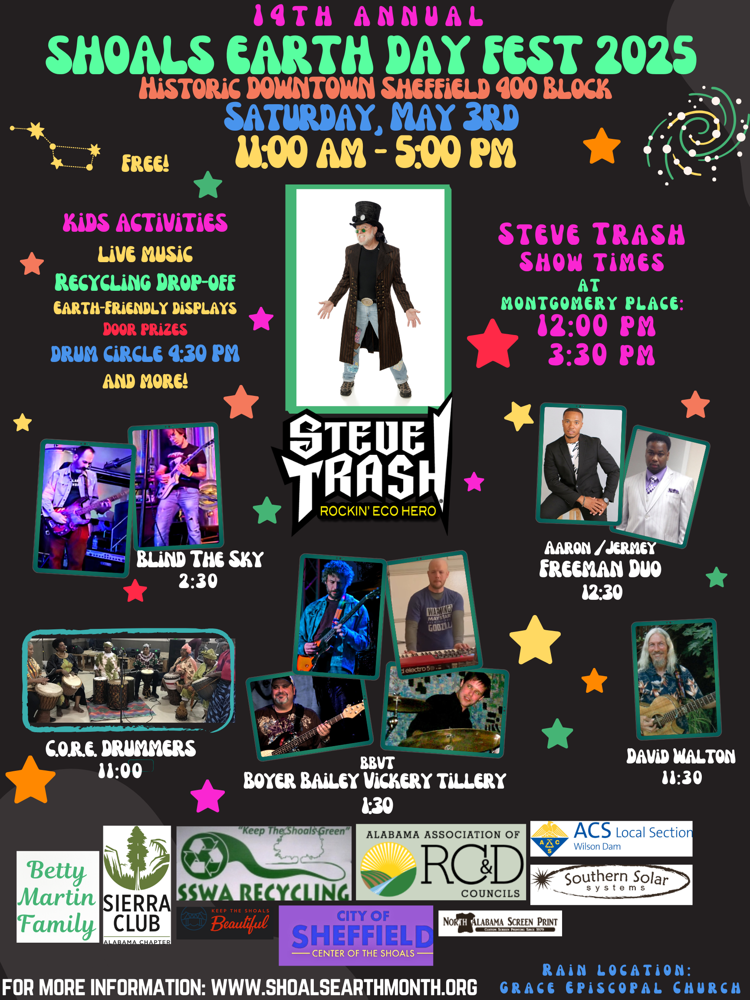

Shoals Earth Month Mission Statement:
The mission of Shoals Earth Month Incorporated is to provide and support educational opportunities for individuals, families, local governments, schools, businesses, and organizations to enhance understanding of the importance and interconnectedness of all natural systems and to celebrate the beauty, biodiversity, and abundance of life on Earth.

Greetings from Shoals Earth Month!
Location
The 14th Annual Shoals Earth Day Fest 2025 will be held on Saturday, May 3, in beautiful, historic, downtown Sheffield, from 11 AM until 5 PM. Shoals Earth Month, Inc. is already busy getting ready for this family-friendly event that is free and open to the community.
Rain location is Grace Episcopal Church, 103 Darby Avenue Sheffield. Stay tuned—check our Facebook page—for continuing updates and possible change of venue due to weather.
It's For Everyone!
This annual celebration includes local governments, non-profits, civic groups, schools, churches, businesses and individuals. We invite you or your business to participate by having an Earth-friendly display/booth at the fest! There is no charge to participate!
Activities
This day-long celebration will feature eco entertainer, Steve Trash, who will be performing at Montgomery Place, 406 N Montgomery Ave, at 12 noon and 3:30 pm, as well as eco-themed displays, local arts and crafts vendors and all-day live music.
Sponsors
Please consider partnering with us as a sponsor of Shoals Earth Month, Inc. A sponsorship of $500 assures your logo on all newspaper ads, posters and also on our official 14th Annual Shoals Earth Day Fest 2025 T shirt.
See the 2025 vendor/ display and sponsor form on our website to print, fill out and mail in. Visit Shoals Earth Month on Facebook and visit our website: here
We appreciate all of our sponsors who make it possible for us to spread the message of sustainable practices and conservation of our beautiful natural assets which make the Shoals a great place to live!
Questions
Please let us know if you have any questions. You may call 256-710-8718 or email solar.muse@proton.com for more information. We look forward to hearing from you soon! - Shoals Earth Month, Inc.